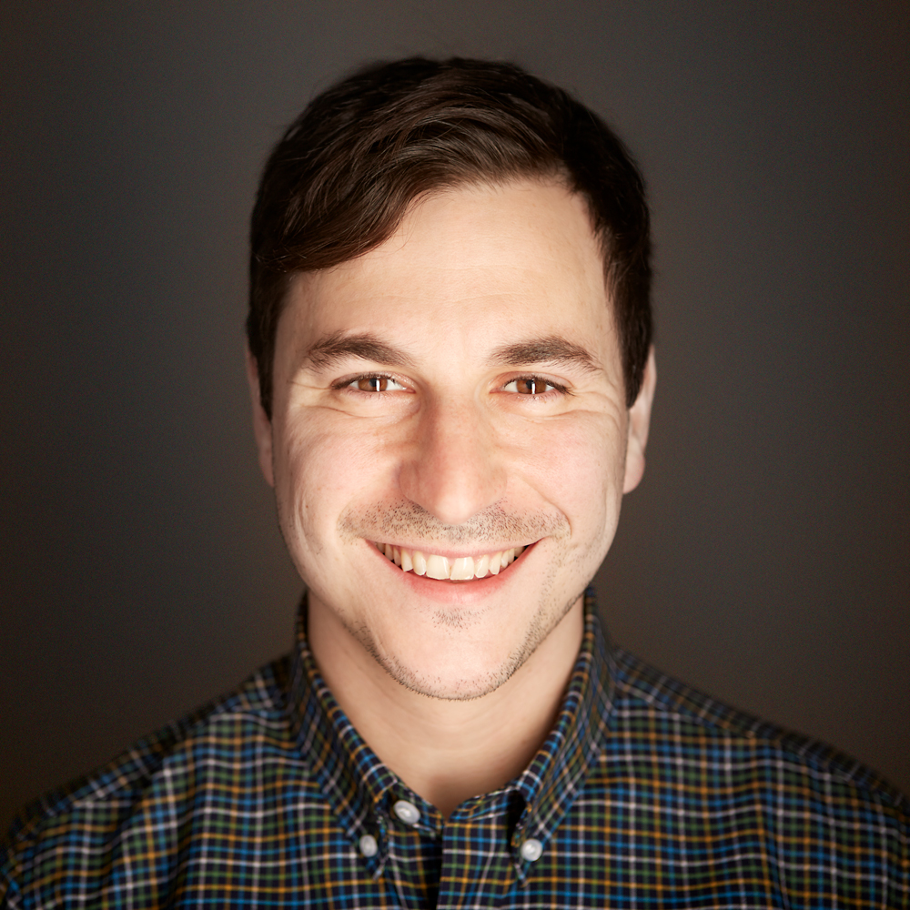

John Costa
Associate Director, Engineering
Associate Director of Engineering with a decade of experience in TypeScript, React, and Ruby on Rails. These days I'm most excited about expanding beyond traditional software development—championing AI tools like Claude Code across ExecOnline, building AI-powered products, and bringing engineering leverage to teams that never had it.